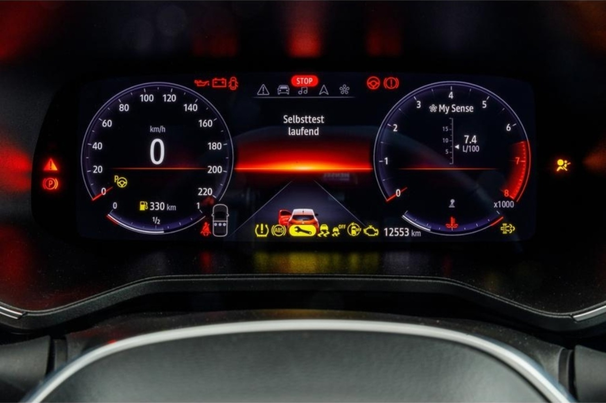

Οι λυχνίες του Clio, με το σωστό χρώμα.
Εξερεύνησε τις ενδείξεις του πίνακα οργάνων, ξεχώρισε την κόκκινη προειδοποίηση STOP από την πορτοκαλί SERVICE και μάθε πώς σχετίζονται με ECU, αισθητήρες και επικοινωνία CAN. Περιλαμβάνονται ενδείξεις των εκδόσεων βενζίνης, diesel και E-Tech Hybrid.
Η φωτογραφία δείχνει πραγματικό Renault Clio 2024 E-Tech Hybrid, ενώ οι εκπαιδευτικές κάρτες λυχνιών αφορούν διαφορετικές εκδόσεις. Οι λυχνίες μπορεί να διαφέρουν ανά χώρα, εξοπλισμό και έκδοση. Οι ενδείξεις βασίζονται στο ανεβασμένο εγχειρίδιο Renault Clio 2024 («Warning lights», σελ. 1.78–1.83 και «Displays and indicators», 1.84–1.90). Όπου το PDF είναι μονόχρωμο, ο χρωματισμός είναι εκπαιδευτικός· οι ακριβείς αποχρώσεις ποικίλλουν ανά έκδοση.

Αναφορά εγχειριδίου: Το εγχειρίδιο Clio 2024 που παρασχέθηκε, σελ. 1.78–1.83, σε συνδυασμό με τον επίσημο διαδικτυακό οδηγό Renault Clio 5. Χρησιμοποιούνται τα σύμβολα της επίσημης ιστοσελίδας Renault όταν είναι διαθέσιμα, με αυτόματη τοπική εφεδρική σχεδίαση αν δεν φορτωθούν. Οι τεχνικές διασυνδέσεις ECU/CAN είναι εκπαιδευτικές επεξηγήσεις, όχι διαγνωστικά πορίσματα.
Υποθετικά περιστατικά συνεργείου με δύο ερωτήσεις το καθένα. Επίλεξε απαντήσεις, προχώρησε με την αρίθμηση και έλεγξε βαθμολογία και εξηγήσεις στο τέλος. Δεν απαιτείται σύνδεση ή λογαριασμός.